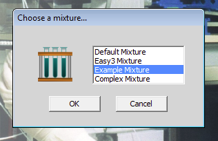

back to the start
previous exercise
back to the start
previous exercise
Exercise 6 of 6
Calculating the number of subunits of an oligomeric protein
The mixture Example_Mixture contains six monomeric proteins with the following molecular weights:
| protein | molecular weight |
|---|
| 1 | 200,000 |
| 2 | 100,000 |
| 3 | 50,000 |
| 4 | 25,000 |
| 5 | 12,500 |
| 6 | 7,400 |
Which of the gel filtration media available in the program would best resolve all six of these proteins?

Load this mixture (choose any one of the six proteins - it doesn't matter which) and subject it to gel filtration using the medium that you have chosen. For each of the six proteins, write down the fraction number of the mid point of its peak in the elution profile. Draw a graph of the fraction number against the logarithm of the molecular weight of each protein. Do you get a straight line? If not, then you should re-examine your data before proceeding.
 Now load the mixture Default_Mixture and choose protein 15. Subject this mixture to gel filtration on the same medium as you chose for the previous mixture. Identify the fractions containing protein 15 by assaying the fractions for enzymic activity. Which fraction contains the maximum activity? What is the native molecular weight of protein 15? Run a 1-dimensional SDS-polyacrylamide gel of the fraction containing the peak activity of protein 15. Identify the band corresponding to protein 15 by immunoblotting. What is the approximate subunit molecular weight of protein 15? How many subunits has this protein?
Now load the mixture Default_Mixture and choose protein 15. Subject this mixture to gel filtration on the same medium as you chose for the previous mixture. Identify the fractions containing protein 15 by assaying the fractions for enzymic activity. Which fraction contains the maximum activity? What is the native molecular weight of protein 15? Run a 1-dimensional SDS-polyacrylamide gel of the fraction containing the peak activity of protein 15. Identify the band corresponding to protein 15 by immunoblotting. What is the approximate subunit molecular weight of protein 15? How many subunits has this protein?